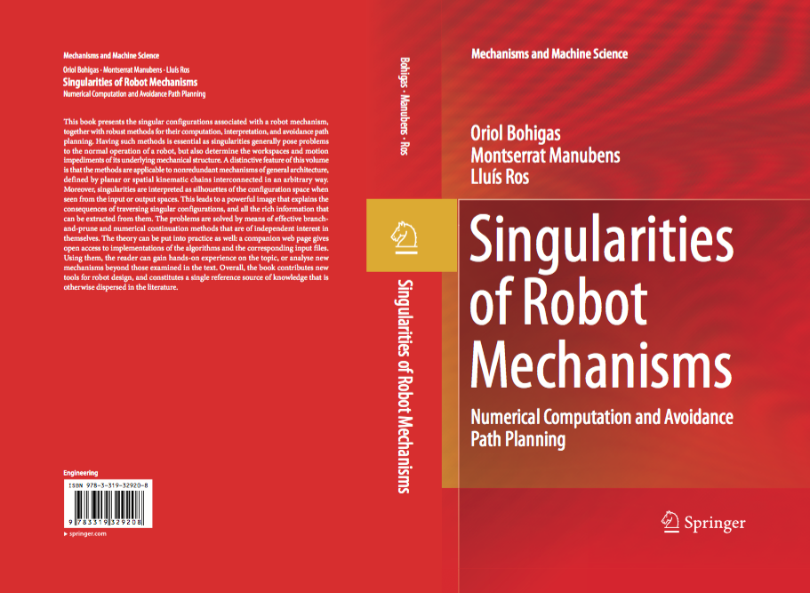

Lluís Ros's publications
Warning: This page
contains links to files of articles that may be covered by
copyright. You may browse the articles at your convenience, in
the same spirit as you may read a journal or a proceedings
volume in a public library. Retrieving, copying, or distributing
these files may violate the copyright protection law.
Books
Singularities of
Robot Mechanisms: Numerical Computation and Avoidance Path
Planning
O. Bohigas, M. Manubens, and L. Ros
Series on Mechanisms and Machine Science. Springer, 2017
ISBN: 978-3-319-32920-8
(Print) 978-3-319-32922-2 (Online)
http://doi.org/10.1007/978-3-319-32922-2
Backcover - book page

International
journals
Collocation Methods for Second
and Higher Order Systems
S. Moreno, L. Ros, and E. Celaya
Autonomous Robots
Vol 48, n. 2, 20 pages, January 2024.
Full text
Direct Collocation
Methods for Trajectory Optimization in Constrained Robotic
Systems
R. Bordalba, T. Schoels, L. Ros, J. M.
Porta, and M. Diehl
IEEE Trans. on
Robotics.
Vol 39, n. 1, pp. 183-202, February 2023.
Full text
A Randomised
Kinodynamic Planner for Closed-chain Robotic Systems
R. Bordalba, L. Ros, and J. M. Porta
IEEE Transactions on Robotics
Vol. 37, n. 1, pp. 99 - 115, February 2021.
Full text
Planning
Wrench-Feasible Motions for Cable-Driven Hexapods
O. Bohigas, M. Manubens, and L. Ros
IEEE Transactions on Robotics
Vol. 32, n. 2, pp. 442-451, March 2016
Full
text
The CUIK Suite:
Motion Analysis of Closed-chain Multibody Systems
J. M. Porta, L. Ros, O. Bohigas, M. Manubens, C. Rosales, L.
Jaillet
IEEE Robotics and Automation Magazine
Vol. 21, No. 3, pp. 105-114, September 2014
Full text
A General
Method for the Numerical Computation
of Manipulator Singularity Sets
O. Bohigas, D.
Zlatanov, L. Ros, M. Manubens, and J.M. Porta
IEEE
Transactions on Robotics
Vol. 30, n. 2, pp. 340-351,
April 2014
Full text
Planning
Singularity-free Paths on
Closed-Chain Manipulators
O. Bohigas, M. E.
Henderson, L. Ros, M. Manubens, and J. M. Porta
IEEE
Transactions on Robotics
Vol. 29, n. 4, pp. 888-898, August 2013
Full text | Animation
of Figure 11 | Animation of Figure 12
Singularities
of Non-redundant manipulators: A Short Account
and a Method for their Computation in the
Planar Case
O. Bohigas, M.
Manubens, and L. Ros
Mechanism and Machine Theory
Vol. 68, pp. 1-17, October 2013.
Full text | CUIK
project
Grasp Optimization under Specific Contact
Constraints
C. Rosales, J.M. Porta, and L. Ros
IEEE Transactions on Robotics
Vol. 29, n. 3, pp. 1552-3098, June 2013.
Full
text | CUIK
project
A Linear Relaxation Method for Computing
Workspace Slices of the Stewart Platform
O. Bohigas, L. Ros, and M. Manubens
ASME Journal of Mechanisms and Robotics
Vol. 5, pp. 011005-1-011005-10, February 2013. ISSN:
1942-4302. DOI: 10.1115/1.4007706
Full
text | CUIK
project
A Complete Method for Workspace Boundary
Determination on General Structure Manipulators
O. Bohigas, L. Ros, and M. Manubens
IEEE Transactions on Robotics.
Vol. 28, n. 5, pp. 993-1006, October 2012. ISSN: 1552-3098.
DOI: 10.1109/TRO.2012.2196311
Full text
| CUIK
project
Exact interval
propagation for the efficient solution of position
analysis problems on planar linkages
E. Celaya, T.
Creemers, L. Ros
Mechanism and Machine Theory
Vol. 54, pp. 116-131,
August 2012, DOI: 10.1016/j.mechmachtheory.2012.03.005.
Full
text | CUIK
project
Synthesizing Grasp Configurations with
Specified Contact Regions
C. Rosales, L.
Ros, J. M. Porta, and R. Suarez
International Journal of Robotics Research.
Vol. 30, n. 3, April 2011. ISSN: 0278-3649. DOI:
10.1177/0278364910370218
Full
text | CUIK
project
A Linear Relaxation Technique for the
Position Analysis of Multi-loop Linkages
J. M. Porta, L.
Ros, and F. Thomas
IEEE Transactions on Robotics
Vol. 25, n. 2, pp. 225-239. April 2009. ISSN:
1552-3098. D.O.I.: 10.1109/TRO.2008.2012337
Full
text | Experiment
files |
CUIK
project
Complete Maps of Molecular Loop
Conformational Spaces
J. M. Porta, L.
Ros, F. Thomas, F. Corcho, J. Canto, and J. J. Perez
Journal of Computational Chemistry
Vol. 28, n. 13, pp. 2170-2189. October 2007.
Wiley. ISSN (electronic): 1096-987XN
Full text |
Seminar
slides | CUIK
project
Box Approximations of Planar Linkage
Configuration Spaces
J. M. Porta, L.
Ros, T. Creemers, and F. Thomas
ASME Journal of Mechanical Design
Vol. 129, n. 4, pp. 397-405. April 2007. ASME Press.
ISSN 1050-0472
Full text |
CUIK
project
Performance Analysis of a 3-2-1 Pose
Estimation Device
F. Thomas, E.
Ottaviano, L. Ros, and M. Ceccarelli
IEEE Transactions on Robotics
Vol. 21, n. 3, pp. 288-297. June 2005. IEEE Press.
ISSN 1042-296X
Full text
A Branch-and-Prune Solver for
Distance Constraints
J. M.
Porta, L. Ros, F. Thomas, and C. Torras
IEEE Transactions on Robotics
Vol. 21, n. 2, pp. 176-187. April 2005. IEEE
Press. ISSN
1042-296X
Full
text
Revisiting Trilateration for Robot
Localization
F. Thomas and
L. Ros
IEEE Transactions on Robotics
Vol. 21, n. 1, pp. 93-101. February 2005. IEEE
Press. ISSN: 1042-296X
Full
text
Geometric Methods for
Shape Recovery from Line Drawings of Polyhedra
L. Ros and F.
Thomas
Journal of Mathematical Imaging and Vision
Vol. 22, n. 1, pp. 5-18. January 2005. Kluwer
Academic Publishers. ISSN: 0924-9907
Full text
Towards Shape
Representation Using Trihedral Mesh Projections
L. Ros, K.
Sugihara, and F. Thomas
The Visual Computer
Vol. 19, n. 2-3, pp. 139-150. May 2003. Springer
Verlag. ISSN: 0178-2789.
Full text
An Ellipsoidal
Calculus Based on Propagation and Fusion
L. Ros, A.
Sabater, and F. Thomas
IEEE Transactions on Systems Man and Cybernetics
Part B. Vol. 32, n. 4, pp. 430-442. August 2002. IEEE
Press. ISSN 1083-4419
Full text
| Preprint
with color figures | Web page with Maple code
Overcoming Superstrictness in Line
Drawing Interpretation
L. Ros and F.
Thomas
IEEE Transactions on Pattern Analysis and Machine
Intelligence
Vol. 24, n. 4, pp. 456-466. April 2002. IEEE Press.
ISSN: 0162-8828
Full text
Smart Schedules
streamline distribution maintenance
T. Creemers, L. Ros, J. Riera, C. Ferrarons, and J.
Roca
IEEE
Computer Applications in Power
Vol.
11, n. 3, pp. 48-53. July 1998. IEEE Press. ISSN
0895-0156.
Full text
Book chapters (ARK, CK, CABLECON)
Randomized Planning of
Dynamic Motions Avoiding Forward Singularities
R. Bordalba, L. Ros, and J. M. Porta
In: Advances in Robot Kinematics 2018. J. Lenarcic and V.
Parenti-Castelli (editors)
Springer Proceedings in Advanced Robotics, vol. 8, pages
170-178. ISBN 978-3-319-93188-3
Full
text
Randomized Kinodynamic Planning for
Cable-Suspended Parallel Robots
R. Bordalba, J.M. Porta, L. Ros
In: Cable-Driven Parallel Robots. Gosselin C., Cardou P.,
Bruckmann T., Pott A. (editors)
Mechanisms and Machine Science, vol. 53, pages 195-206.
Springer, 2018. ISBN: 978-3-319-61430-4
Full text
On the Symmetric Molecular Conjectures
J. M. Porta, L. Ros, B. Schulze, A. Sljoka, and W. Whiteley
In Computational Kinematics, F. Thomas and A. Perez (editors)
Springer Series in
Mechanism and Machine Science, vol. 15, pages 175-184. 2014. ISBN: 978-94-007-7213-7
Full text
An
Open-source Toolbox for Motion Analysis of Closed-chain
Mechanisms
L. Ros, J. M. Porta, O. Bohigas, M. Manubens, C. Rosales,
and L. Jaillet
In Computational Kinematics, F. Thomas and A. Perez
(editors).
Springer Series in Mechanism and Machine Science, vol. 15,
pages 147-154. 2014. ISBN: 978-94-007-7213-7
Full text
Navigating the wrench-feasible C-space
of cable-driven hexapods
O. Bohigas,
M. Manubens, and L. Ros
In Cable-Driven
Parallel Robots, T.
Bruckmann and A. Pott (editors)
Vol. 12 of
Mechanisms and Machine Science
Pages
53-68. Springer, 2012. ISBN: 978-3-642-31987-7
Full
text
Planning singularity-free force-feasible
paths on the Stewart platform
O. Bohigas,
M. Manubens and L. Ros
In Advances
in Robot Kinematics. J. Lenarcic and M. Husty
(editors)
Pages 245-252. Springer, 2012. ISBN:
978-94-007-4619-0
Full
text
A Complete Method for Workspace Boundary
Determination
O. Bohigas, L.
Ros, and M. Manubens
In Advances in Robot Kinematics. J. Lenarcic and M.
Stanisic (editors)
Pages 329-338. Springer, 2010. ISBN:
978-90-481-9261-8.
Full text
Distance Constraints Solved
Geometrically
F. Thomas, J.M.
Porta, and L. Ros
In Advances in Robot Kinematics. G. Galletti and J.
Lenarcic (editors)
Pages 31-40. Kluwer Academic Publishers, 2004. ISBN
1402022484.
Full text
Isolating Self-Motion Manifolds on a
PlaySatationTM
J.M. Porta, L.
Ros, and F. Thomas
In Advances in Robot Kinematics. G. Galletti and J.
Lenarcic (editors)
Pages 123-132. Kluwer Academic Publishers, 2004. ISBN
1402022484.
Full
text
Solving Multi-Loop
Linkages by Iterating 2D Clippings
J.M. Porta, L.
Ros, F. Thomas, and C. Torras
In Advances in Robot Kinematics. F. Thomas and J.
Lenarcic (editors)
Pages 255-265. Kluwer Academic Publishers, 2002. ISBN
1402006969.
Full text
Uncertainty Model and Singularities of
3-2-1 Wire-Based Tracking Systems
F. Thomas, E.
Ottaviano, L. Ros, and M. Ceccarelli
In Advances in Robot Kinematics. F. Thomas and J.
Lenarcic (editors)
Pages 107-117. Kluwer Academic Publishers, 2002. ISBN
1402006969
Full text
A Concise Bézier-Clipping Technique for
Solving Inverse Kinematics Problems
C. Bombín, L.
Ros, and F. Thomas
In Advances in Robot Kinematics. J. Lenarcic and M. M.
Stanisic (editors)
Pages 53-60. Kluwer Academic Publishers, 2000. ISBN
0-7923-6426-0.
Full text
Lecture
Notes in Computer Science
Efficient Computation
of 3D Skeletons by Extreme Vertex Encoding
J. Rodriguez,
F. Thomas, D. Ayala, and L. Ros
In Discrete Geometry for Computer Imagery. G. Saniti
di Baja, S. Svensson, and I. Nystrom (editors)
Lecture Notes in Computer Science. Vol. 2886, pp.
151-160. September 2003. Springer Verlag. ISSN
0303-9743.
Full text
Shape Representation Using Trihedral
Mesh Projections
L. Ros, K.
Sugihara, and F. Thomas
In Discrete Geometry for Computer Imagery. A.
Braquelaire, J.-O. Lachaud, and A. Vialard (editors)
Lecture Notes in Computer Science. Vol. 230, pp.
209-219. January 2002. Springer Verlag. ISSN
0303-9743.
Full text
Degree
theses
A Kinematic-Geometric Approach to
Spatial Interpretation of Line Drawings
L. Ros
(Supervised by Prof. F. Thomas)
Ph.D. Thesis
Technical University of Catalonia, 2002. ISBN
84-699-5751-1
Full text | Web
Percepció Activa per a la
Identificació i Localització de Patrons 2D
L. Ros (Supervised by Prof. F. Thomas)
Mechanical Engineering Degree Thesis
Technical University of Catalonia, 1992
Selected
invited talks
Numerical Analysis of Robot Linkage
Configuration Spaces
L. Ros
(joint work with J.M. Porta, M. Manubens, O.
Bohigas, and F. Thomas)
Workshop on Rigidity Theory
October 2011. The Fields Institute, Toronto,
Canada.
Solving Distance Constraints by
Iterative Projections and Backprojections
L. Ros (Joint
work with F. Thomas and J.M. Porta)
1st Workshop on Modelling Protein Flexibility and
Motions
July 17-22, 2003. Banff International Research
Station, Alberta, Canada
A Branch-and-Prune Solver for Systems of
Distance Constraints
L. Ros (Joint work
with F. Thomas and J.M. Porta)
1st Workshop on
Modelling Protein Flexibility and Motions
July 17-22, 2003. Banff International Research
Station, Alberta, Canada
International
Conference on Robotics and Automation
Randomized kinodynamic
planning for constrained systems
R. Bordalba, L. Ros, and
J.M. Porta
Proc. of the IEEE
International Conference on
Robotics and Automation
2018. Brisbane, Australia. IEEE
Computer Society Press
DOI: 10.1109/ICRA.2018.8460753
Full text
Numerical computation of
manipulator singularities
O. Bohigas, D. Zlatanov,
L. Ros, M. Manubens and J.M. Porta
Proc. of the IEEE
International Conference on
Robotics and Automation
Pages 1351-1358. 2012. St. Paul,
Minnesota, USA. IEEE Computer
Society Press
Full text
A
singularity-free path planner
for closed-chain manipulators
O. Bohigas, Michael E.
Henderson, L. Ros and J.M. Porta
Proc. of the IEEE International
Conference on Robotics and
Automation
Pages 2128-2134. 2012. St. Paul,
Minnesota, USA. IEEE Computer
Society Press
Full
text
Finding All Valid Hand
Configurations for a Given
Precision Grasp
C.
Rosales, J. M. Porta, R. Suarez, and L. Ros
Proc. of the IEEE International Conference on
Robotics and Automation
Pages 1634-1640. May 19-23, 2008. Pasadena,
USA. IEEE Computer Society Press. ISBN
978-1-4244-1647-9.
Full
text |
Video
| Slides
| Poster
| Experiment
files | CUIK
solver web
A Wrench-Sensitive
Touchpad Based on a Parallel
Structure
R.
Frigola, L. Ros, F. Roure, and F. Thomas
Proc. of the IEEE International Conference on
Robotics and Automation
Pages 3449-3454. May 19-23, 2008. Pasadena,
USA. IEEE Computer Society Press. ISBN
978-1-4244-1647-9.
Full
text | ICRA'08
slides | IRI seminar slides'05 | Poster
Fast Multiresolutive
Approximations of Planar Linkage
Configuration Spaces
T.
Creemers, J. M. Porta, L. Ros, and F. Thomas
Proc. of the IEEE International Conference on
Robotics and Automation
Pages 1511-1517. May 15-19, 2006. Orlando,
Florida. IEEE Computer Society Press. ISBN
0-7803-9505-0.
Full
text
On the Trilaterable
Six-Degree-of-Freedom Parallel and Serial
Manipulators
J. M. Porta, L.
Ros, and F. Thomas
Proc. of the IEEE International Conference on Robotics
and Automation
Pages 960-967. April 18-22, 2005. Barcelona. IEEE
Computer Society Press. ISBN 0-7803-8914-X.
Full text
A Branch-and-Prune Algorithm for Solving
Systems of Distance Constraints
J. M. Porta, F.
Thomas, L. Ros, and C. Torras
Proc. of the IEEE International Conference on Robotics
and Automation
Vol. 1, pp. 342-348. September 14-19, 2003.
Taipei, Taiwan. IEEE Computer Society Press. ISBN
0-7803-7737-0.
Full text
Coordinate-free Formulation of a
3-2-1 Wire-based Tracking Device using
Cayley-Menger Determinants
F. Thomas, E.
Ottaviano, L. Ros, and M. Ceccarelli
Proc. of the IEEE International Conference on Robotics
and Automation
Vol. 1, pp. 355-361. September 14-19, 2003.
Taipei, Taiwan. IEEE Computer Society Press. ISBN
0-7803-7737-0
Full
text
On the Computation of the Direct
Kinematics of Parallel Spherical Mechanisms Using
Bernstein Polynomials
C. Bombin, L.
Ros, and F. Thomas
Proc. of the International Conference on Robotics and
Automation
Vol. 3, pp. 3332-3337. May 2001. Seoul, South Korea.
IEEE Computer Society Press. ISBN 0-7803-6578-X
Full
text
Correcting Polyhedral
Projections for Scene Reconstruction
L. Ros and F.
Thomas
Proc. of the International Conference on Robotics and
Automation
Vol. 2., pp. 2126-2133. May 2001. Seoul, South Korea.
IEEE Computer Society Press. ISBN 0-7803-6578-X
Full text
Computing Signed Distances between
Free-Form Objects
F. Thomas, C.
Turnbull, L. Ros, and S. Cameron
Proc. of the International Conference on Robotics and
Automation
Vol. 4, pp. 3713-3718. April 2000. San Francisco, USA.
IEEE Computer Society Press. ISBN 0-7803-5886-4
Full text
A Simple Characterization of the
Infinitesimal Motions Separating General Polyhedra
in Contact
E. Staffetti,
L. Ros, and F. Thomas
Proc. of the International Conference on Robotics and
Automation
Vol. 1, pp. 571-577. May 1999. Detroit, USA. IEEE
Computer Society Press. ISBN 0-7803-5180-0-5
Full text
Analysing Spatial Realizability of Line
Drawings through Edge-Concurrence Tests
L. Ros and F.
Thomas
Proc. of the International Conference on Robotics and
Automation
Vol. 4, pp. 3559-3566. May 1998. Leuven,
Belgium. IEEE Computer Society Press. ISBN
0-7803-4300-x-5
Full text
Robotics, Science and Systems
Collocation
Methods for Second Order Systems
S. Moreno, L. Ros, and E. Celaya
In: Robotics: Science and Systems IX
New York, USA, 2022
MIT Press
Full text
Motion
Planning for
6-D
Manipulation
with Aerial
Towed-cable
Systems
M. Manubens, D. Devaurs,
L. Ros, and J. Cortes
In: Robotics: Science and Systems IX
Berlin, Germany, 2013
MIT Press
Full
text
Global
Optimization
of Robotic
Grasps
C.
Rosales, J.M.
Porta, and L.
Ros
In:
Robotics:
Science and
Systems VII,
pp. 1-8
Los Angeles,
USA, 2011
MIT Press
Full
text
Multi-Loop
Position
Analysis via
Iterated
Linear
Programming
J. M. Porta,
L. Ros, and F. Thomas
In
Robotics: Science and
Systems II, pp.
169-176
Cambridge,
USA, June 2006
G. S.
Sukhatme, S. Schaal,
W. Burgard, and D. Fox
Editors
MIT Press
Full text
ASME IDETC
On the Numerical Classification of the Singularities of
Robot Manipulators
O.
Bohigas, D. Zlatanov, M. Manubens and L. Ros.
2012 ASME
International Design Engineering Technical Conference
Chicago,
Illinois, USA.
Full
text
A Unified Method for Computing Position and Orientation
Workspaces of General Stewart Platforms
O.
Bohigas, L. Ros and M. Manubens
2011 ASME
International Design Engineering Technical Conference
Washington,
DC, USA, pp. 959-968
Full text
IROS
A
Legendre-Gauss Pseudospectral Collocation Method for
Trajectory Optimization in Second Order Systems
S. Moreno-Martín, L. Ros, and E. Celaya
Proc. of IEEE Intl. Conference on Intelligent Robots and
Systems, 2022
Kyoto, Japan, October 2022.
Full text
A Singularity-Robust LQR Controller for Parallel
Robots
R. Bordalba, Josep M. Porta, and L. Ros
Proc. of IEEE Intl. Conference on Intelligent Robots and
Systems, 2018
Madrid, Spain, October 2018.
Full text
A
Space
Decomposition
Method for
Path Planning
of Loop
Linkages
J. M. Porta,
J. Cortes, L. Ros, and
F. Thomas
Proc.
of IEEE Intl.
Conference on
Intelligent Robots and
Systems, 2007
29San Diego,
USA, October - 2
November 2007
Full text
International
Conference on Pattern Recognition
Shape-from-Image via
Cross-Sections
L. Ros and F.
Thomas
Proc. of the 15th International Conference on Pattern
Recognition
Vol. I, pp. 794-797. September 2000. Barcelona, Spain.
IEEE Computer Society Press. ISBN 0-7695-0750-6
Full text
Fast Skeletonization of Spatially
Encoded Objects
F. Romero, L.
Ros, and F. Thomas
Proc. of the 15th International Conference on Pattern
Recognition
Vol. III, pp. 510-513. September 2000. Barcelona,
Spain. IEEE Computer Society Press. ISBN 0-7695-0750-6
Full
text
IFTOMM
Exact Interval Propagation for
the Efficient Solution of Planar Linkages
E.
Celaya, T. Creemers, and L. Ros
Proc. of the 12th World Conference in
Mechanism and Machine Science
June 17-21, 2007, Besançon, France
Full text
Finding Infinitesimal
Motions of Objects in Assemblies
Using Grassmann-Cayley Algebra
E.
Staffetti, L. Ros, and F. Thomas
Proc. of the 10th World Congress on
the Theory of Machines and Mechanisms
Vol. 2. pp. 584-592. Oulu, Finland.
June 1999. Oulu University Press. ISBN
951-42-5289-6
Full
text
Other
international conferences
Model
Predictive Control for a Mecanum Wheeled Robot Navigating
Among Obstacles
Iñigo Moreno-Caireta, Enric Celaya, and Lluís Ros
7th IFAC Conf. on Nonlinear Model Predictive Control 2021 (July
11-14). Bratislava (Slovakia).
Available from IFAC Papers Online, Vol. 54, Issue 6, 2021,
pages 119-125
Full text
Inverse
Kinematics by Distance Matrix Completion
J.M. Porta,
L. Ros, and F. Thomas
International Workshop on Computational Kinematics
Cassino, Italy. May 4-6 2005.
Full
text
A Global Constraint Model for Integrated
Routeing and Scheduling on a Transmission Network
L. Ros, T.
Creemers, E. Tourouta, and J. Riera
Proc. of the 7th International Conference on
Information Networks, Systems and Technologies"
Pages 40-47. Minsk, Belarus. October 2001. ISBN
985-426-692-3
Full
text
Numerical Analysis of
the Instantaneous Motions of Panel-and-Hinge
Frameworks and its Application to Computer
Vision
L. Ros and F.
Thomas
Proc. of the 2nd Workshop on Computational Kinematics
Pages 199-210. Seoul, South Korea. May 2001. Seoul
National University Press
Full text
Applying Delta/Star
Reductions for Checking the Spatial
Realizability of Line Drawings
L. Ros and F.
Thomas
Proc. of the 14th European Workshop on Computational
Geometry
Pages 127-131. March 1998. Barcelona, Spain. ISBN
B-13764-1998
Full text
Programación Óptima
de Tareas de Mantenimiento y Reconfiguración
sobre Redes de Media Tensión
L. Ros, T.
Creemers, J. Riera, C. Ferrarons, J. Roca, and X.
Corbella
Proceedings of the Cuartas Jornadas Luso-Españolas de
Ingeniería Eléctrica
Pages 905-911. July 1995. Porto, Portugal. ISBN
972-752-004-9
Full text
Constraint-based Maintenance Scheduling
on an Electric Power-Distribution Network
T. Creemers, L.
Ros, J. Riera, C. Ferrarons, J. Roca, and X. Corbella
Proc. of the 3rd International Conference and
Exhibition on Practical Applications of Prolog
Pages 135-144. April 1995. Paris, France. Alinmead
Software Ltd. ISBN 0-9525554-0-9
Full text
PlaNets: Scheduling Activities at Power
Utilities
L. Ros, T.
Creemers, and J. Riera
COSYTEC Newsletter. N. 4, pp. 1-4. July 1995
Cosytec S.A. Parc Club Orsay Université. 4, Rue Jean
Rostand. 91893 Orsay Cedex (France)
Full text
Spanish
conferences
Estabilización de una
Bola sobre un Plano Utilizando un Robot Paralelo 6-RSS
D. González, L. Ros, y F. Thomas
Actas de las XXXVIII Jornadas de Automática
September 2017. Gijón, Spain.
Full text
Geometric
Methods in Robotics
L. Ros, F.
Thomas, J. M. Porta, C. Torras, V. Ruiz de Angulo, T.
Creemers, J. Canto, F. Corcho, and A. Sabater
First Workshop on Automation, Vision and Robotics
Pages 33-41. February 2004. Barcelona. ISBN:
84-7653-844-8
Full
text
Fast Skeletonization of volumetric
objects
J. Rodriguez,
L. Ros, D. Ayala and F. Thomas
Actas del XIII Congreso Español de Informática Gráfica
July 2003. La Coruña, Spain.
Full text
Un Modelo Cinemático para la
Interpretación Tridimensional de Proyecciones
Poliédricas
L. Ros and F.
Thomas
Actas de las XIX Jornadas de Automática
Pages 377-382. September 1998. Madrid, Spain.
Full
text (All in Spanish)
Percepción Activa
para la Identificación y Localización de
Patrones 2D. Aplicación a Juntas Parcialmente
Solapadas
L. Ros and F.
Thomas
Actas del 2o Congreso de la Asociación Española de
Robótica
Pages 249-255. November 1991. Zaragoza, Spain
Full
text (All in Spanish)
Other
publications and press articles
Distribute Power, Water, Telecom over
Planet
Inside R&D
Alert
13 November 1998. John Wiley & Sons Inc
Available through
http://www.wiley.com/technical_insights/.
Millorar la Xarxa
Elèctrica
AVUI (Catalan
journal)
Sunday 21 April 1996, page 31